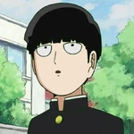

ANIME FAN PAGE
Also known as Mob. He is the main character of this story.
Shigeo is a short and slim teenager with jet-black bowl-shaped hair and black eyes. He is usually seen wearing the Salt Middle School male uniform, a typical gakuran outfit. Shigeo has a rather nondescript expression on his face. However, whenever he reaches 100%, his eyes glow red or white, and his hair is affected by his psychic powers, causing it to float and become spiky. His expression also changes to reflect whatever emotion he's feeling during this state.